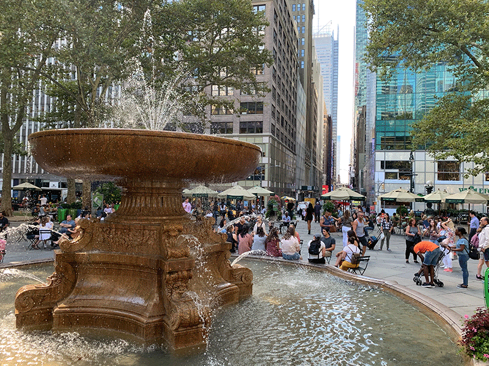
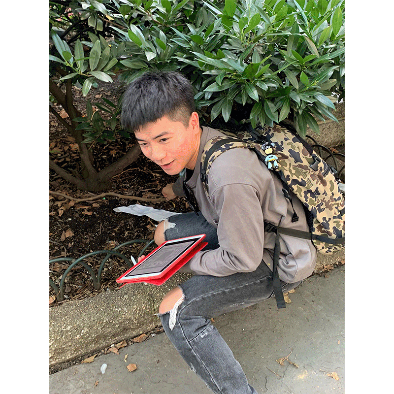
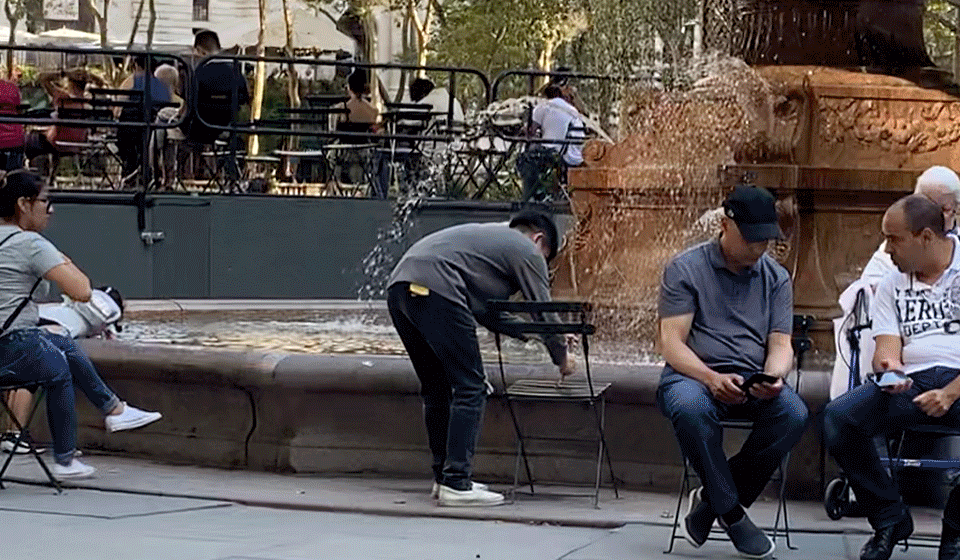
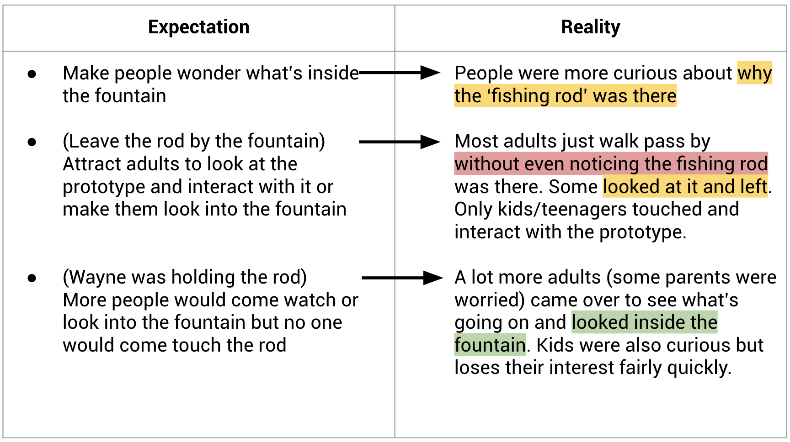

Instruction Sets for Strangers ——— On-site Prototype 1
WEEK 2 - WED, SEPT 4TH, 2019

On-site Prototype


Expectations vs Reality

Reflection
- How do we invite people to interact with our prototype?
- What should we attach on the fishing thread, that would bring a feeling of enlightenment to
people, when they pull it out of the water? Does it connected to the metaphor of fishing?
- How do we attract people who pays no attention to the fountain?
- How do we make our prototype more noticeable, but still approachable?
- How do we incorporate the historical significance of the fountain?
Ideas about Improving
- Giving passers-by a hint that the fishing rod can be played around with.
- Installing more than one set of fishing outfit.
- Attaching a bell of the fishing rod, which rings unpredictably.
- Make something underwater to pull the rod/making pulsing vibrations to create an illusion that
something is in the water.
- Implement the use of light/sound to grab attention (especially at night).